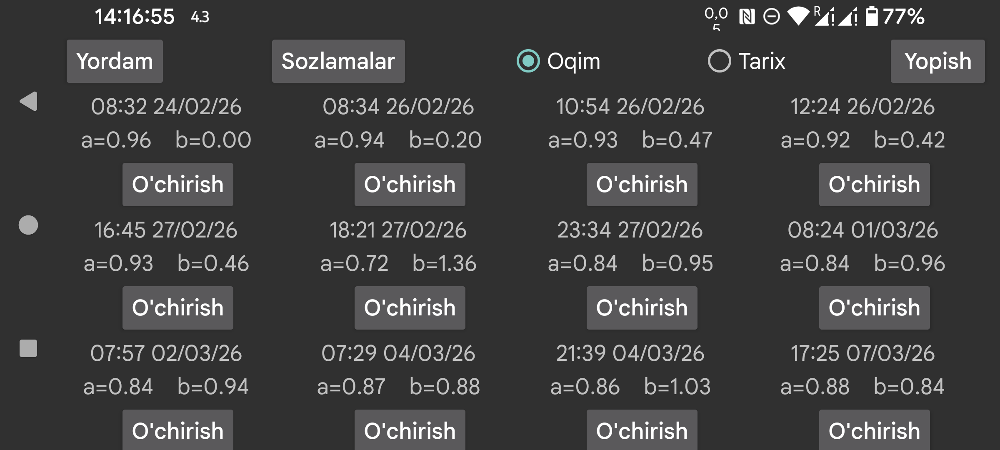

Bu sensor uchun bajarilgan kalibrlashlarni ko‘rsatadi. Har bir kalibrlashda u qachon bajarilgani, qon glyukozasi va sensor glyukozasi o‘rtasidagi bog‘lanishning qiyaligi (a) va erkin hadi (b) saqlanadi:
Qon glyukozasi = a × SensorGlyukozasi + b
Agar chap menyu→Sozlamalar→Kalibrlash bo‘limida “Qiyalikni o‘zgartirish” yoqilmagan bo‘lsa, a = 1 bo‘ladi va faqat b aniqlanadi.
Oqim: oqim qiymatlari uchun kalibrlashlarni ko‘rsatadi. Oqim — o‘lchash paytida olingan va signallar hamda uzatishlar uchun ishlatiladigan qiymatdir.
Tarix: tarix qiymatlari uchun kalibrlashlarni ko‘rsatadi (faqat FreeStyle Libre va CareSens Air’da mavjud). Tarix qiymatlari keyinroq tuziladigan va LibreLink hamda CareSens Air ilovalarida ko‘rsatiladigan qayta ishlangan qiymatlardir.
Kalibrlangan egri chiziqlar ko‘rinishini o‘ng o‘rta menyuda Oqim va Tarix oldidagi belgi orqali yoqish yoki o‘chirish mumkin.
Kalibrlash ustiga bosish sizni shu kalibrlash vaqtiga olib boradi. O‘chirish tugmasi esa kalibrlashni olib tashlaydi.
Sozlamalar: chap menyu→Sozlamalar→Kalibrlash bo‘limiga borishning boshqa yo‘li.